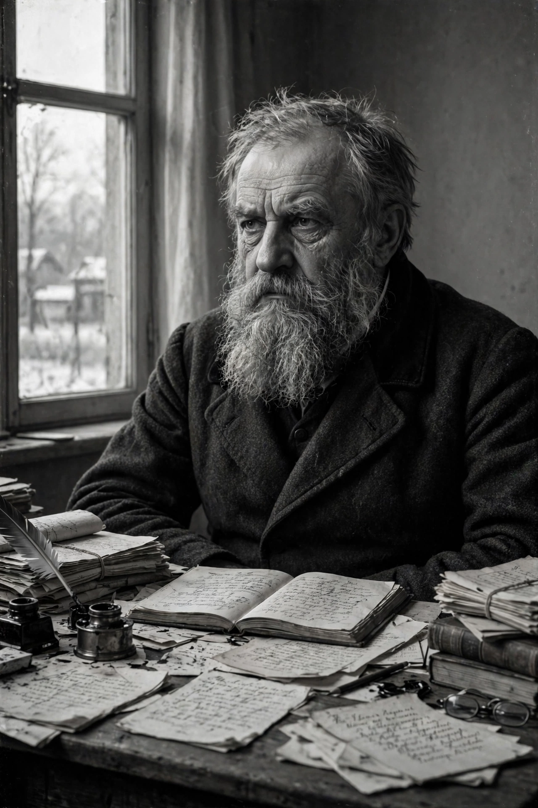

Aleksandr Solzhenitsyn
Aleksandr Isayevich Solzhenitsyn (11 December 1918 – 3 August 2008) was a Russian novelist, historian and dissident who helped raise global awareness of the Soviet Gulag forced-labour camp system. A decorated Red Army artillery officer in the Second World War, he was arrested in 1945 for critical remarks about Joseph Stalin in private letters and spent eight years in camps and three in exile. His novella One Day in the Life of Ivan Denisovich (1962) was published during the Khrushchev Thaw; his later works, above all The Gulag Archipelago (1973), circulated in samizdat and abroad.

| Aleksandr Solzhenitsyn | |
|---|---|
| Born | 11 December 1918, Kislovodsk, Russian SFSR |
| Died | 3 August 2008 (aged 89), Moscow, Russia |
| Occupation | Novelist, historian, essayist |
| Notable works | One Day in the Life of Ivan Denisovich; The Gulag Archipelago; Cancer Ward; The First Circle |
| Awards | Nobel Prize in Literature (1970) |
Exile and return
Awarded the Nobel Prize in Literature in 1970, which he could not accept in person for fear of being barred from returning, Solzhenitsyn was expelled from the Soviet Union in February 1974 after the Paris publication of The Gulag Archipelago. He lived in Switzerland and then for nearly two decades in Cavendish, Vermont, where he worked on his historical cycle The Red Wheel. His 1978 Harvard commencement address, "A World Split Apart", criticized both Soviet communism and Western materialism. He returned to Russia in 1994, travelling across the country by train, and spent his last years writing history and political commentary.
Legacy
Solzhenitsyn is widely regarded as one of the most significant literary and moral witnesses to twentieth-century totalitarianism; The Gulag Archipelago is often credited with fatally undermining Western sympathy for the Soviet system.
Categories: 1918 births · 2008 deaths · Russian novelists · Nobel laureates in Literature · Gulag detainees